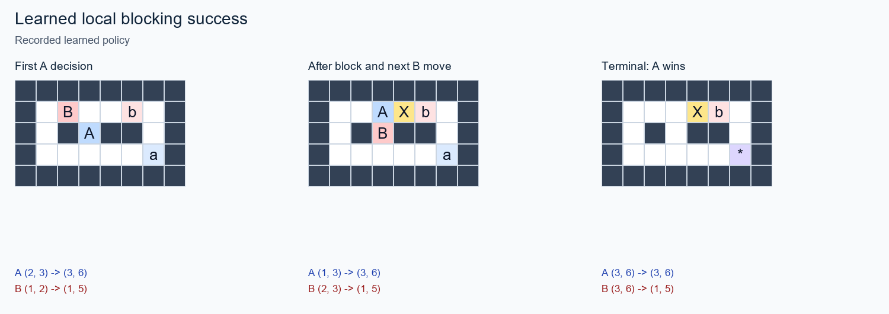
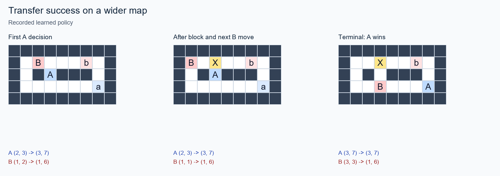
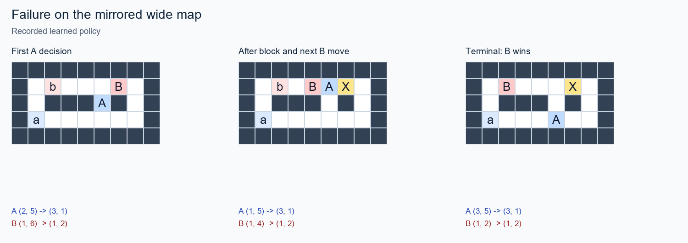
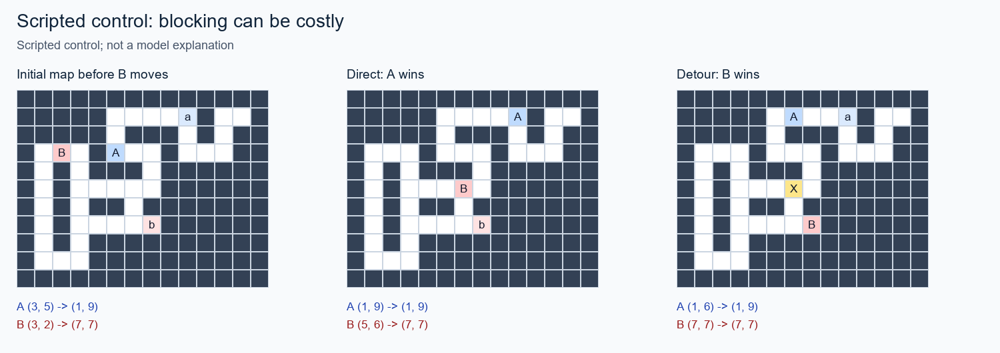

Strategic Blocking: four case studies
Observed actions, verified outcomes, and explicit limits. These are not internal reasoning traces.
A (blue) and B (red): runners. a/b: goals. X: obstacle. *: shared occupancy. Dark cells: walls. Coordinates: zero-based (row, column). Covered goals remain listed below each map.
1. Learned local blocking success
Recorded learned policy

A enters the opponent corridor, blocks right, and returns toward its own goal. Blocking is functionally useful in this recorded trajectory; no explanation text was emitted. At the first block, B's remaining shortest-path distance changes from 2 to 8 steps, measured before B's next move. These distances exclude the action used to place the block.
Exact model outputs
<answer> move up </answer>
<answer>block right</answer>
<answer>move down</answer>
<answer>move down</answer>
<answer>move right</answer>
<answer>move right</answer>
<answer>move right</answer>
Replacing the first executed block with wait changes the outcome to a B win when later recorded actions remain fixed. This is an open-loop intervention, not a fresh policy rollout.
Selection: First successful local blocking episode.
2. Transfer success on a wider map
Recorded learned policy

The final adapter blocks up immediately and reaches its goal. This illustrates the wide-map 40/50 result, not a generalization guarantee. At the first block, B's remaining shortest-path distance changes from 4 to 12 steps, measured before B's next move. These distances exclude the action used to place the block.
Exact model outputs
<answer>block up </answer>
<answer>move down</answer>
<answer>move right</answer>
<answer>move right</answer>
<answer>move right</answer>
<answer>move right</answer>
Replacing the first executed block with wait changes the outcome to a B win when later recorded actions remain fixed. This is an open-loop intervention, not a fresh policy rollout.
Selection: First after-policy episode with the stated layout and outcome in original file order.
3. Failure on the mirrored wide map
Recorded learned policy

The model moves up, blocks right, and moves down twice before B wins. A legal block and a plausible-looking sequence are insufficient for success. We cannot infer whether the cause is spatial reasoning, action bias, or something else from this trace alone. At the first block, B's remaining shortest-path distance changes from 3 to 3 steps, measured before B's next move. These distances exclude the action used to place the block. The obstacle is behind B relative to its route toward the left-side goal and does not delay its shortest route at that decision. This is a factual action-effect mismatch with a hypothetical delay claim, not an explanation the model actually emitted.
Exact model outputs
<answer> move up </answer>
<answer>block right</answer>
<answer>move down</answer>
<answer>move down</answer>
Selection: First after-policy episode with the stated layout and outcome in original file order.
4. Scripted control: blocking can be costly
Scripted control; not a model explanation

The direct scripted policy wins in six A actions. The detour delays B but loses. This checks the task's trade-off; it does not establish that the trained model recognizes when to avoid blocking.
Selection: Pre-existing authored costly-detour control.